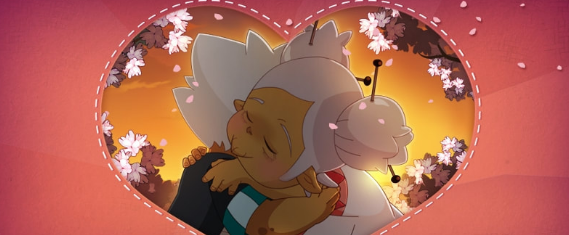

Event de la semaine du 14/02 :
Durant la semaine du 14 fevrier pour la saint-valentin anakama a sont event appelée la saint ballotin. Pendant cette semaine 2 quêtes seront disponible la 1er est : Coeur brisé, cette quetes et répétable et les recompense vont de chocolat a des objet pouvant rendre les gens rose. La seconde quêtes ce nomme Le pouvoir des fleurs : La seconde quête se fait qu’une seule fois et vous permet d’obtenir l’Amourlette Hernel qui vous donne le titre « Ballotin(e) ». Néanmoins pour terminer cette quête il faudra à un moment être accompagné d’un personnage de sexe opposé au vôtre au même niveau de la quête.